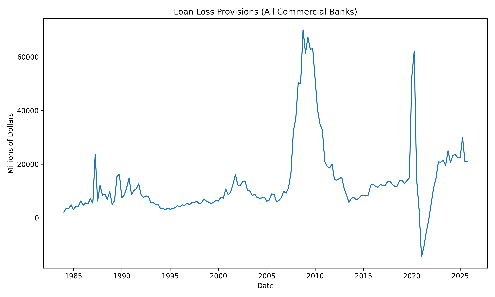
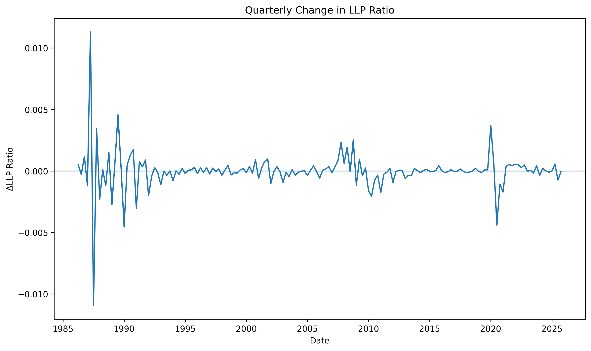

Loan Loss Provisions: Anticipatory or Reactionary?
A Macro-Information Responsiveness Analysis
What Are Loan Loss Provisions (LLP)?
Banks make loans → some will not be repaid
LLP = money set aside today for those expected future losses
Simple Idea
- If a bank expects more loans to fail → it increases LLP
- If risk looks low → LLP stays low
Why it matters
- LLP directly reduces profits and liquidity
- It reflects how banks recognize risk over time
Why Does Timing Matter?
If banks act too early:
- Profits are reduced unnecessarily
- Risk may be overstated
- Fear of missing out
If banks act too late:
- Losses appear suddenly during downturns
- Profits and capital drop sharply
- Financial stability and ability to operate are threatened
What Would Banks Ideally Do?
If they had perfect foresight:
- Banks would recognize risk before losses occur
- LLP would adjust as soon as future problems are expected
But in reality:
- Economic signals are uncertain and noisy
- Early warnings may be wrong or misleading
- Acting too early can reduce profits unnecessarily
So banks face a tradeoff:
Act early and risk being wrong
or
Wait for confirmation and risk being late
Research Question
How do banks adjust loan loss provisions over time?
- Do banks anticipate economic downturns?
- Do they react after conditions worsen?
- Or do they adjust at the same time as the economy changes?
Secondary Question
- What role can data science play in improving how banks recognize risk and set provisions?
How Do We Study This?
We use a set of standard time-series tools to study timing
Methods used:
First differences → Focus on changes rather than levels
Lagged variables → Track how responses unfold over time
Regression analysis → Measure relationships between LLP and macro signals to understand how they move across time
Goal:
Determine whether LLP responds before, during, or after economic changes
What Do We Mean by Economic Changes?
We use a small set of indicators to capture different parts of the economy
Labor Market
- Unemployment rate → Are people losing jobs?
Real Economic Activity
- Industrial production → Is the economy growing or slowing down?
Financial Conditions
- Interest rate spread (long vs short rates) → Is credit becoming tighter?
Business Expectations
- Small business optimism index → How confident are firms about the future?
How Do We Analyze Timing Based on Macro Signals?
We focus on how changes in LLP relate to changes in the economy / our variables over time
Step 1 — Focus on Changes
- We study how variables change from quarter to quarter
- This helps isolate when adjustments occur
Step 2 — Introduce Timing
- We compare LLP today to economic changes:
- in the same quarter
- in previous quarters
- in the same quarter
Step 3 — Measure the Relationship
- We use regression to quantify how LLP and macro signals
move together across time
Loan Loss Provisions Over Time

Growth of the Banking System

- Total loans increase steadily over time
- Reflects long-term growth in the banking system
- Makes level-based comparisons misleading
Changes in Loan Loss Provisions (ΔLLP)

- Focus on quarter-to-quarter changes
- Captures adjustment behavior
- Removes long-term trend effects
LLP vs Unemployment (Changes)

- Relationship is visible, but inconsistent
- Periods of alignment and divergence
- No clear, stable pattern over time
Unemployment and LLP: Regression Results
| Metric | Value |
|---|---|
| R² | 0.050 |
| Observations | 156 |
| Key Result | Weak explanatory power |
- Some lagged effects are significant
- No consistent timing pattern
- Relationship is unstable
What is the Optimism Index?
- Based on surveys of small businesses
- Measures expectations about:
- Hiring
- Sales
- Economic conditions
- Hiring
Why use it?
- Captures forward-looking sentiment
- Reflects how firms perceive future risk
- Could signal changes before they appear in hard data
Optimism and LLP: Regression Results
| Metric | Value |
|---|---|
| R² | 0.053 |
| Observations | 156 |
| Key Result | Weak explanatory power |
- Contemporaneous effect is significant
- Other lags show little consistency
- No clear timing pattern
Why Consider a Composite Model?
- The economy is multi-dimensional
- No single indicator captures overall conditions
In practice:
- Banks observe many signals at once
- Risk is shaped by a combination of factors
Hypothesis
→ Combining signals may better capture LLP behavior
Multi-Signal Model: Results
| Metric | Value |
|---|---|
| R² | 0.210 |
| Observations | 156 |
Key Findings
- Explanatory power increases substantially
- Multiple signals matter simultaneously
- No single variable dominates
Interpretation
→ LLP responds to a combination of macroeconomic signals
Timing of LLP Response (Lag Structure)
| Variable | Lag 0 | Lag 1 | Lag 2 | Lag 3 |
|---|---|---|---|---|
| Unemployment | + | - | — | - |
| Optimism | - | — | - | — |
| Spread | + | - | + | - |
Key Takeaways
- Effects are distributed across multiple quarters
- No single lag consistently dominates
- No clear evidence of anticipation
- Signs point to a pattern of overcorrection
Ideal behavior:
- Recognize risk before losses occur
- Adjust LLP in anticipation of downturns
What we observe:
- LLP responds during and after changes
- Adjustments are gradual and delayed
- Provisioning sometimes trends in the opposite direction of economic signals